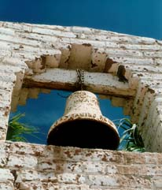
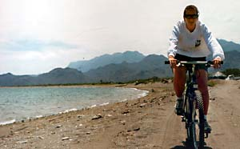
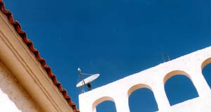

Loreto was founded in 1697 as the head of the Jesuit missions and served as the capitol of the California territory until destroyed by a massive earthquake in 1829.

The old mission, rebuilt and restored many times, sits on the central town plaza. At 10 o'clock, the bells clanged and we joined most of the town for Easter Mass. There were crosses erected in the square, which we later found out were for a crucifixion ceremony later that night. Inside, the pews were filled with a much higher ration of children to adults than we expected. Apparently, the Loretaños must feel salvation is more important for their kids than themselves. The service was aimed at them; an old nun lead songs with a piercing, warbling voice and the priest gave the traditional "what the women found at the tomb" sermon. After, vendors were waiting on the square with ice cream and fried dough.
That afternoon, we rented mountain bikes and headed south out of town on a dirt road along the water. We rode out past the airport to a stretch of beach where the locals built simple shade structures. Families were gathered under them, cooking and drinking. They shouted and waved as we peddled by.

We missed the road to Primer Aguas, a freshwater spring set in a canyon, and ended up in Nopoló. The government built the town as a beachside resort in the '70s, but never finished it. Now, it stands as a mostly deserted grid of empty streets with utility poles. It was weird to ride through this, as if dreams were mapped to the ground, waiting to come true. Eventually, we ran into the dreadful Hotel Eden, and quickly turned around for fear of glimpsing a naked old person.
That night, we moved from Motel Davis to Plaza Loreto. Our room had air conditioning, endless hot water, and clean sheets on comfortable beds. We'd forgotten these simple comforts in less than two days.

Later, we met our guides and the rest of our expedition. I was surprised to find that we were the youngest couple on the trip. Our leaders were cool. Tom was very quiet and older; Martin speaks with a soft Canadian accent and has wild blond hair. They fitted us with life vests and handed out dry bags for our gear. They gave instructions to meet them at 7am tomorrow to pack the kayaks and be off.